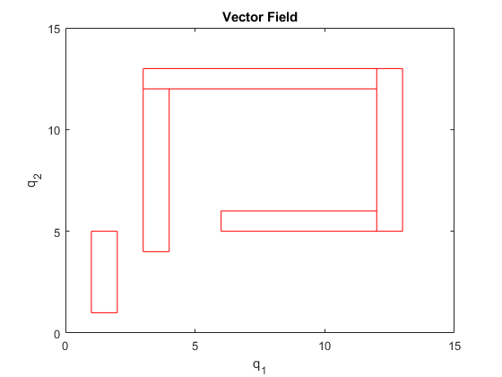
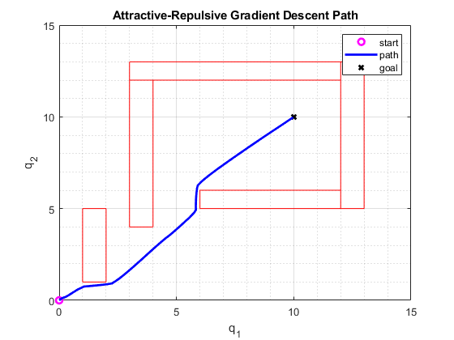

Contents
Housekeeping
clear all
close all
clc
W1_WO1 = [1,1; 2,1; 2,5; 1,5];
W1_WO2 = [3,4; 4,4; 4,12; 3,12];
W1_WO3 = [3,12; 12,12; 12,13; 3,13];
W1_WO4 = [12,5; 13,5; 13,13; 12,13];
W1_WO5 = [6,5; 12,5; 12,6; 6,6];
W1 = [W1_WO1 W1_WO2 W1_WO3 W1_WO4 W1_WO5];
W2_WO1 = [-6,-6; 25,-6; 25,-5; -6,-5];
W2_WO2 = [-6,5; 30,5; 30,6; -6,6];
W2_WO3 = [-6,-5; -5,-5; -5,5; -6,5];
W2_WO4 = [4,-5; 5,-5; 5,1; 4,1];
W2_WO5 = [9,0; 10,0; 10,5; 9,5];
W2_WO6 = [14,-5; 15,-5; 15,1; 14,1];
W2_WO7 = [19,0; 20,0; 20,5; 19,5];
W2_WO8 = [24,-5; 25,-5; 25,1; 24,1];
W2_WO9 = [29,0; 30,0; 30,5; 29,5];
W2 = [W2_WO1 W2_WO2 W2_WO3 W2_WO4 W2_WO5 W2_WO6 W2_WO7 W2_WO8 W2_WO9];
figure
field_info = csvread('field_2b1.csv');
meta_data = num2cell(field_info(1,1:5));
[top,bottom,left,buffer,scale_factor] = deal(meta_data{:});
mat_field = field_info(2:end,1:end-1);
[h,w] = size(mat_field);
for i=1:2:length(W1)
plot([W1(:,i);W1(1,i)],[W1(:,i+1);W1(1,i+1)],'r');
hold on
end
xlim([0 15]);
ylim([0 15]);
xlabel('q_1')
ylabel('q_2')
title('Vector Field')

i)
fprintf("I started with a large dstar_goal and slowly decreased it \n")
fprintf("until I saw that the attractive forces were decreasing smoothly\n")
fprintf("and the robot was able to escape the first obstacle to the right. The Qstar\n")
fprintf("for the first obstacle was very small to help the robot escape the \n")
fprintf("obstacle closesly. The Qstar for the rest of the obstacles were the \n")
fprintf("same and slightly larger to push the obstacle to the right\n")
I started with a large dstar_goal and slowly decreased it
until I saw that the attractive forces were decreasing smoothly
and the robot was able to escape the first obstacle to the right. The Qstar
for the first obstacle was very small to help the robot escape the
obstacle closesly. The Qstar for the rest of the obstacles were the
same and slightly larger to push the obstacle to the right
ii) Path
mat = csvread('path_2b1.csv');
start = [0,0];
goal = [10,10];
h = zeros(3,1);
h(1) = plot(start(1),start(2),'om','Linewidth',2);
hold on
h(3) = plot(goal(1),goal(2),'xk','Linewidth',2);
h(2) = plot((mat(:,1)-abs(left)-buffer)/scale_factor,(mat(:,2)-abs(bottom)-buffer)/scale_factor,'b','Linewidth',2);
for i=1:2:length(W1)
plot([W1(:,i);W1(1,i)],[W1(:,i+1);W1(1,i+1)],'r');
hold on
end
legend(h,'start','path','goal')
grid on
grid minor
xlabel('q_1')
ylabel('q_2')
title('Attractive-Repulsive Gradient Descent Path')
x0=100;
y0=50;
width=400;
height=400;

iii)
len_path=0;
for i=1:length(mat)-1
len_path = len_path + sqrt((mat(i+1,1)-mat(i,1))^2 + (mat(i+1,2)-mat(i,2))^2);
end
fprintf("The lenght of path 1 is: %f\n",len_path/scale_factor)
The lenght of path 1 is: 14.742592